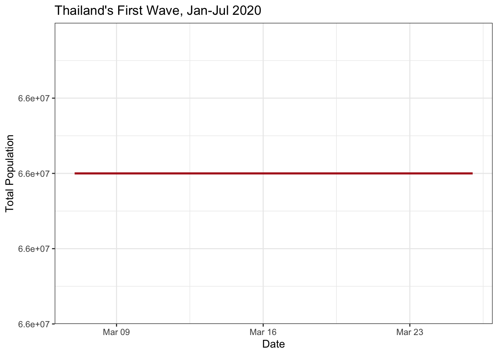

Fitting models in R
Summary
A practical session where the students use a worked example to learn how a compartmental SEIRS model is written in the R programming language. Meaningful model output will be derived and plotted. We will use a COVID-19 outbreak in Thailand as an example.
We will write some R code for our COVID-19 model. The code for a compartmental model will require several sections:
Part 1 covers:
- Code summary
- Set working directory
- Keep track of dependencies
- Set the start and end time for the model simulation
- Examine the dataset
Part 2 covers:
- Define the model parameters
- Set up the initial conditions
- Define the model variables (also known as the compartments or states)
- Set up a function to solve the equations
- Run and plot the model
Part 3 covers:
- Post-process the model output to predict standard epidemiological metrics
- Plot useful outputs
We recommend to save your text at the end of each part by printing the file.
Prerequisites and Data in R
Code summary
It is good practice to write a short description of your code to summarise its purpose for future users. Below is an example of such a description. Open R studio, create a new file and copy and paste the code chunk below into your editor to start writing your own code:
# SPARK Modelling Short course
# 2023 Infectious Diseases Modelling
#########################################
## Modelling Thailand's COVID outbreak ##
#########################################Save this file in your student_materials folder, and give it a meaningful name, like session_seir_ode_covid.
Library loading and importing data
We’ll need three libraries for this session:
library(dplyr)
library(deSolve)
library(ggplot2)and some data
first_wave <- read.csv("first_wave_TH.csv", colClasses = c("Date", "numeric", "numeric"))
# Convert dates
first_wave$Date <- as.Date(first_wave$Date, format = "%Y-%m-%d")
summary(first_wave) Date Cases Cumulative_cases
Min. :2020-01-01 Min. : 0.00 Min. : 0
1st Qu.:2020-02-15 1st Qu.: 0.00 1st Qu.: 34
Median :2020-03-31 Median : 2.00 Median :1711
Mean :2020-03-31 Mean : 17.42 Mean :1535
3rd Qu.:2020-05-15 3rd Qu.: 11.00 3rd Qu.:3025
Max. :2020-06-30 Max. :188.00 Max. :3171 Writing model code in R
Define the model parameters
All our parameters have to go in a single structure, either a vector or a list. Today, we’ll use a named vector
parameters <- c(
R0 = 4,
incubation_period = 5,
infectious_period = 6
)The parameters for the model are frequently estimated either from literature or from the data given the model and other parameters of the model (stay tuned for more on this). The flows are often represented by some Greek symbols, but it is often better to have more meaningful names as we have done here.
Complete the following table using information about the natural history of COVID-19 infection:
| Parameter | Flow transformation | Value/Range | Units |
|---|---|---|---|
| Basic reproduction number | |||
| Incubation period | |||
| Duration of infection | |||
| Duration of immunity |
Type parameters in your console. What do you see?
Type `parameters[“R0”] into your console. What does this value mean?
Set up the initial conditions and model variables
Copy and paste the chunk below into your script to continue model development:
# Initial conditions
Total_population <- 6.6e7
Initial_exposed <- 0
Initial_infected <- 20
Initial_recovered <- 0
Initial_susceptible <- Total_population - Initial_exposed - Initial_infected - Initial_recovered
# State variables
state <- c(
Susceptible = Initial_susceptible,
Exposed = Initial_exposed,
Infectious = Initial_infected,
Recovered = Initial_recovered
)We also need to define the start and end time for the model simulation:
# Time window
start_date <- as.Date("2020-03-07")
end_date <- as.Date("2020-03-26")
times <- seq(start_date, end_date, by = 1)Setting up the function to solve equations
Just as we did for session 2, we can write functions to evaluate our system of equations, which we will need to use for the ODE solver. The SEIR model we’re going to use here is more complicated than we’ve seen, but work through it slowly and make sure it all makes sense.
# Model function
COVID.base <- function(t, state, parameters) {
with(as.list(c(state, parameters)), {
# Calculate the total population size
Total_population <- Susceptible + Exposed + Infectious + Recovered
# Calculate the average force of infection imposed on each susceptible individual
force_of_infection <- R0 * Infectious / (Total_population * infectious_period)
# Calculate the net (instantaneous) change in each state variable
Susceptible_change <- -force_of_infection * Susceptible
Exposed_change <- force_of_infection * Susceptible - Exposed / incubation_period
Infectious_change <- Exposed / incubation_period - Infectious / infectious_period
Recovered_change <- Infectious / infectious_period
# Return net changes as list
return(list(
c(
Susceptible_change,
Exposed_change,
Infectious_change,
Recovered_change
)
))
})
}What is the name of our function and what are the inputs and outputs?
What is the rate of movement out of state E?
What is the rate of movement out of state I?
What is the formula for \(\lambda\), known as the force of infection?
Explain the different components of the force of infection.
Run and plot hte model
Copy the following chunk into your script to solve the ODE
# Solve model
out <- ode(y = state, times = as.numeric(times - times[1]), func = COVID.base, parms = parameters)
# Plot solution
par(mar = c(1, 1, 1, 1)) # reduce the margins of the plot in order to fit it in the panel
plot(out)Explain how each of the variables S, E, I and R can be measured in the field.
Define incidence and prevalence, and discuss the differences between them.
Data processing and plotting
Post-process the model output to predict standard epidemiological metrics
This is great, but as we’ve seen before, the output from ode can be a bit unwieldly. Let’s write a function that can clean it up for us.
tidy_base_model <- function(ode_output, times, parameters) {
as.data.frame(ode_output) %>%
mutate(
Prevalence = Exposed + Infectious,
Incidence = Exposed / parameters["incubation_period"],
Cumulative_incidence = cumsum(Incidence) + Incidence[1],
Population = Susceptible + Exposed + Infectious + Recovered,
Date = times
)
}
tidied_output <- tidy_base_model(out, times, parameters)What is the formula for incidence?
Write down an equation for prevalence and the corresponding R code.
Why do we choose to plot incidence?
Plot the total population size and predicted incidence
It’s time to plot our solution, and make sure we haven’t made any silly mistakes.
ggplot() +
geom_line(aes(x = Date, y = Prevalence), data = tidied_output, linewidth = 1, colour = "firebrick") +
labs(x="Date", y="Modelled Prevalence") +
ggtitle("Thailand's First Wave, Jan-Jul 2020") +
theme_bw()ggplot() +
geom_line(aes(x = Date, y = Population), data = tidied_output, linewidth = 1, colour = "firebrick") +
ggtitle("Thailand's First Wave, Jan-Jul 2020") +
labs(x="Date", y="Total Population") +
ggtitle("Thailand's First Wave, Jan-Jul 2020") +
theme_bw()
What is the sum of all the differential equations for the COVID-19 model?
Why do we choose to plot the population size over time?
Compare the model with the data
# Compare the solution with the data
# Incidence
ggplot(first_wave) +
geom_col(aes(x=Date, y=Cases), width=1, fill=NA, colour="black") +
geom_point(data=tidied_output, aes(x=Date, y=Incidence), size=2, colour="firebrick") +
ylab("Daily cases") +
xlab("") +
ggtitle("Model-predicted incidence") +
theme_bw()# Cumulative incidence
ggplot(first_wave) +
geom_line(aes(x=Date, y=Cumulative_cases), linewidth=2, colour="skyblue") +
geom_point(data=tidied_output, aes(x=Date, y=Cumulative_incidence), size=2, colour="firebrick") +
ylab("Cumulative cases") +
xlab("") +
ggtitle("Model-predicted cumulative incidence") +
theme_bw() Vary the value of \(R_0\) and re-run the modeol. What value of \(R_0\) do you think is most realistic?
Perhaps the number of people who seeded the outbreak was smaller or larger. How can you explore that using the code and would that change your estimate for \(R_0\)?
What is the difference between the first and second graphs, and why should we plot these?
Try changing the end times and re-running the model:
start_date = as.Date("2020-03-07")
end_date = as.Date("2020-04-26")
times_long = seq(start_date, end_date, by=1)
long_out <- ode(y = state, times = as.numeric(times_long - times_long[1]), func = COVID.base, parms = parameters)
tidied_long <- tidy_base_model(long_out, times_long, parameters)Why would we do this?